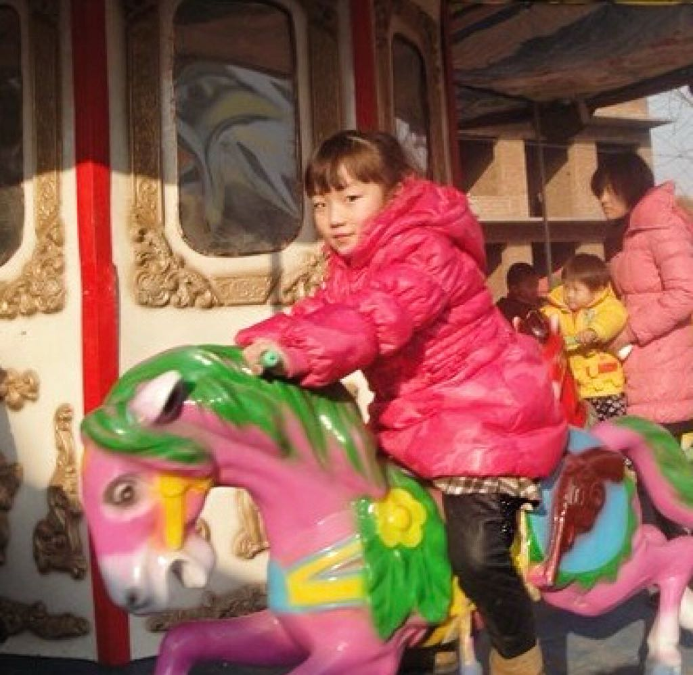

Hello! My name is Shiqing Yang, and I am originally from China. I am currently pursuing a degree in Statistics, a field that fascinates me with its ability to make sense of complex data and reveal patterns that can drive informed decisions. My academic journey has sharpened my analytical skills and deepened my passion for finding insights in numbers. Outside of my studies, I love to travel and explore new places. Traveling gives me the opportunity to experience different cultures, meet new people, and learn about the world from diverse perspectives. Whether I’m hiking through scenic landscapes or exploring bustling cities, travel always brings a fresh sense of discovery. Through my site, I hope to share more about my academic interests, personal projects, and experiences. Whether you're here to learn more about my studies or simply curious about my journey, I hope you find something inspiring!
My artifact is the camera feature of smartphones. The camera function of smartphones is undoubtedly a meaningful innovation in modern technology that has not only revolutionized the traditional definition and mode of photography, but has also profoundly affected the way we interact with the world. With high-resolution images and powerful computational photography, smartphones have made it possible for ordinary people to become artists and documentarians, lowering the barriers to artistic creation significantly.
As a statistics major, I’ve become deeply interested in the power of data to solve real-world problems. The ability to analyze trends, predict outcomes, and make data-driven decisions is something I believe will shape the future of many industries, from healthcare to technology. I’m particularly fascinated by the application of data science in areas such as economics, and I hope to contribute to meaningful projects in these fields. My goal is to use my skills to drive innovation and create solutions that improve lives. In the future, I plan to work on economics and continue developing my expertise in this field. I’m excited about the challenges ahead and the opportunity to make an impact through data.
Exploring Technology and Coding My passion for technology and coding has been a significant part of my journey as a statistics major. I find immense joy in exploring how data and algorithms can be used to solve complex problems and improve decision-making processes. Whether I’m working on a personal coding project or experimenting with new software, I am constantly fascinated by the endless possibilities technology offers. In my spare time, I enjoy learning new programming languages such as Python and R, which are essential for data analysis and statistical modeling. I often participate in online coding challenges and contribute to open-source projects to sharpen my skills and collaborate with other tech enthusiasts. Additionally, I love to stay updated with the latest advancements in technology and data science through online courses, blogs, and podcasts. This continuous learning fuels my ambition to merge my statistical knowledge with technological innovation, allowing me to make a significant impact in fields like data analytics, artificial intelligence, and beyond.